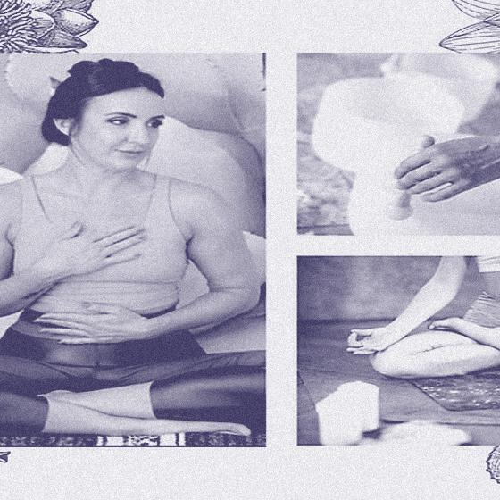
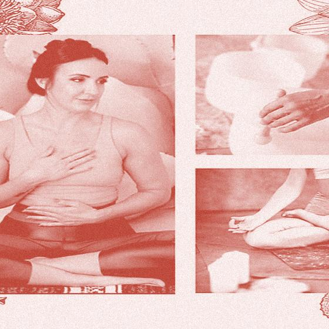
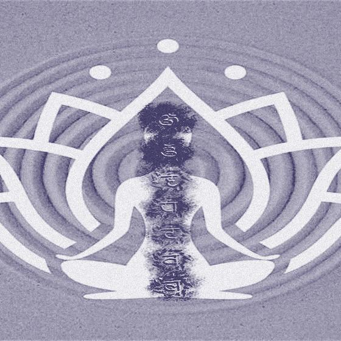
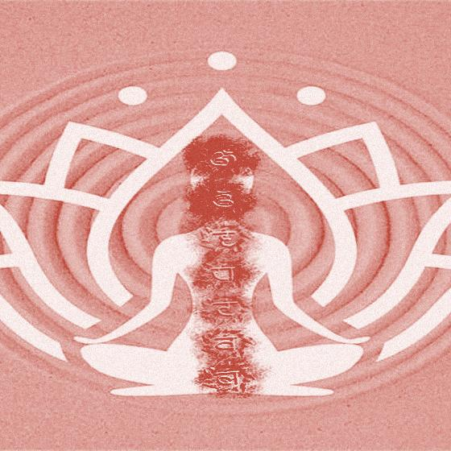
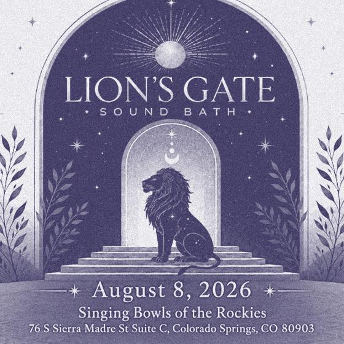
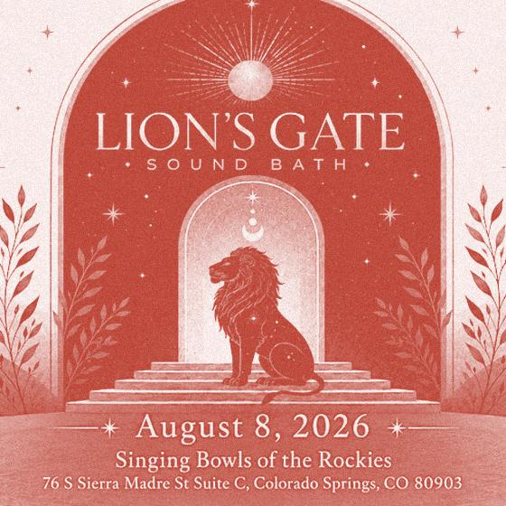

 Somatic BreathWork & Sound Bath Tue, Aug 4 · 6:00 PM · Singing Bowls of the Rockies — Colorado Springs · with Danielle Grace · Breathwork + sound · $45
 Chakra Cleansing Sound Bath Fri, Aug 7 · 7:00 PM · Singing Bowls of the Rockies — Colorado Springs · with Gigi Martins · $39
 Lion's Gate Portal Sound Bath Sat, Aug 8 · 4:30 PM · Singing Bowls of the Rockies — Colorado Springs · with Gigi Martins · $39
Heart's Release: Sound Bath for Letting Go Sat, Aug 15 · 10:30 AM · Singing Bowls of the Rockies — Colorado Springs · $39
Community Wellness Experience-Sound Bath + Salt Room August 15th Sat, Aug 15 · 1:00 PM · EDENOLOGY Holistic Wellness — Colorado Springs · $44
Temple of Echoes: Sound Ceremony in the Cave of the Winds Sun, Aug 16 · 7:30 PM · Cave of the Winds Mountain Park — Colorado Springs · Gong bath · From $66